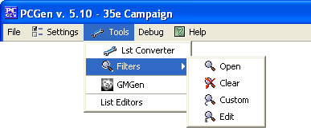

The Filters menu options are for use within PCGen to add, edit, or create custom filters for sorting items on the various character tabs.
The Open menu option will open a new window where you can select existing filter types for system wide filters to use.
The Clear menu option will remove any existing filters you have added or created.
The Custom menu option will open a new window where you can select existing filter types for the tab you are on.
The Edit menu option will open a new window where you can create your own filter types (mini-scripting capabilities).